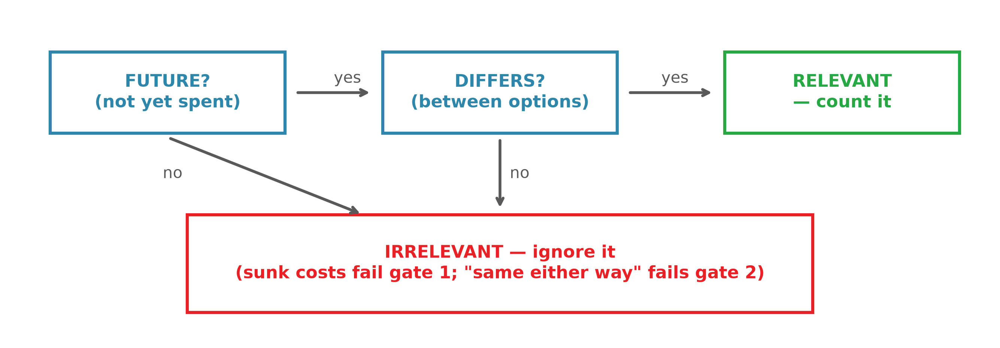
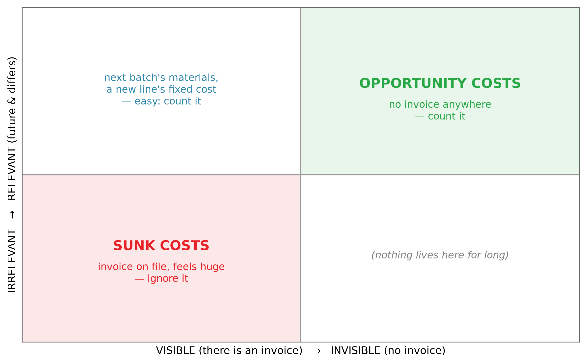
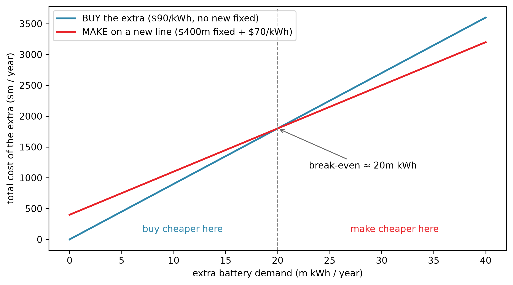
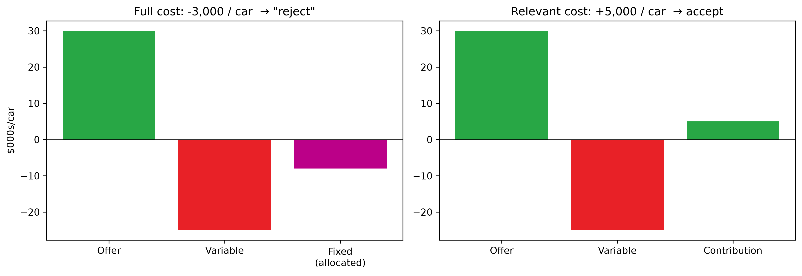

Session 4 — Decision Making & Relevant Costs
Should Tesla make its own batteries — and which costs actually matter?
 — open today’s notebook in your browser and run along (no install needed)
— open today’s notebook in your browser and run along (no install needed)
TipOpening quiz — Session 3 + Class 3
Five questions on yesterday — the lecture and the class. One best answer each; write your letters (or vote on Menti in the room), then check the reveal. Formative only — not graded, no effect on your grade.
- A factory makes two products: a simple, high-volume model and a complex, low-volume model. All overhead is spread using a single plant-wide rate per unit. Which statement best describes the likely effect on each model’s reported cost?
- A. The complex, low-volume model is under-costed and the simple, high-volume model is over-costed.
- B. The simple, high-volume model is under-costed and the complex, low-volume model is over-costed.
- C. Both models are under-costed, because a single plant-wide rate always leaves some overhead unallocated.
- D. Neither model is mis-costed, because the same total overhead is allocated whichever method is used.
- Fretwork Guitars builds 6,000 guitars a year across two models. Its machining cost pool costs £240,000 a year, and the two models together use 16,000 machine-hours. A Stage model needs 4 machine-hours per guitar. Under activity-based costing, how much machining overhead is charged to each Stage guitar? A. £15 B. £40 C. £60 D. £160
- Under Harbourline Luggage’s new ABC system, its trunk line shows a full cost of £310 per trunk against a selling price of £280. The trunks share the factory building, cutting tables and stitching machines with the firm’s other product lines. Which statement best evaluates the proposal to drop the trunk line on these figures?
- A. There is no danger — removing a product that loses £30 on every unit sold must increase total profit.
- B. ABC systematically overstates overhead, so the trunk line is in fact profitable as reported.
- C. The overhead already spent on the trunk line is sunk, so the line must be kept until that spending is recovered.
- D. Most of the allocated overhead is shared, committed cost that would simply reload onto the surviving lines.
- Aurora Pianos reports profit per unit after all costs: £900 on each grand piano and £150 on each digital keyboard. It sells 200 grands and 3,000 keyboards a year. Which statement best identifies the company’s profit engine?
- A. Grand pianos — £900 per unit is six times the keyboards’ £150 per unit.
- B. Keyboards — they earn £450,000 of total profit against £180,000 from grands.
- C. The two lines are equal in total, because allocation changes the distribution of profit, not the total.
- D. The lines cannot be ranked without knowing each product’s break-even volume.
- Ridgeway Kayaks’ machine set-up cost pool is £54,000 a year; 45 production runs are performed. Its Expedition model uses 20 of the runs, and 1,500 Expedition kayaks are made a year. Under activity-based costing, the set-up overhead charged to each Expedition kayak is: A. £16 B. £36 C. £1,200 D. £24,000
NoteReveal
- A — the complex model’s batch- and product-level costs get diluted across every unit made: high-volume simple products subsidise low-volume complex ones (cross-subsidisation).
- C — rate = £240,000 ÷ 16,000 = £15 per machine-hour; 4 hours × £15 = £60. (£40 is the plant-wide volume rate — not ABC.)
- D — allocated ≠ avoidable: the building, tables and machines stay, so their overhead reloads onto the survivors — step one of the death spiral.
- B — total profit = per-unit profit × volume: £450,000 versus £180,000. “Most profitable per unit” and “where the money is” are different questions.
- A — £54,000 ÷ 45 = £1,200 per run; × 20 runs = £24,000; ÷ 1,500 kayaks = £16. (£36 ignores the driver; £1,200 stops at the rate; £24,000 forgets to divide by the kayaks.)
Question 3 ended on the real issue: not what a product is charged, but which costs actually disappear if you act. That question — relevance — is today. ↓
Which costs actually matter?
NoteA tempting (and wrong) argument
“Our batteries cost $79/kWh at full cost; buying from Panasonic lands at $90. So make them ourselves — we save $11.”
It sounds fine. It can be exactly backwards. The fix is one idea.
Sunk costs: the $6.2 bn goes in the bin
A sunk cost is money already spent that you can’t get back. It fails gate 1, so by the rule it’s never relevant — no matter how big or how painful.
- Gigafactory Nevada: Tesla reported $6.2bn invested by early 2023, with a $3.6bn expansion underway — real figures, from Tesla’s own reporting.
- Make batteries there or buy from Panasonic — that money is gone either way → sunk. It must not touch the make-or-buy decision.
- What can still matter is the factory’s resale value, or what else the space could earn — see opportunity cost, next.
NotePredict (show of hands)
Hypothetical scenario: Tesla has spent $200m developing a new battery design — and it doesn’t work. A competitor offers a working alternative for $150m. What should Tesla do?
- keep trying — we’ve already spent $200m · (b) buy the alternative — the $200m is sunk · (c) keep trying — $200m > $150m · (d) negotiate to split the costs
Opportunity costs: the invisible cost that is relevant
An opportunity cost is the value of the best alternative you give up. It’s future, and it differs between options — so it’s relevant — but there’s no invoice for it, so it’s the cost managers most often miss.
If Tesla uses the Gigafactory floor to build batteries, it can’t use that floor for Megapacks — Tesla’s grid-scale battery-storage product, sold to utilities: ~3.9 MWh a unit, a battery the size of a shipping container. The Megapack profit it forgoes is a real cost of making batteries — even though no one writes it down.
The pattern to remember: sunk costs are visible but irrelevant; opportunity costs are invisible but relevant. We weight them exactly backwards by instinct.

The first decision — keep or drop?
Wednesday ended on a question no allocation could answer: which costs actually disappear if you act? Firms face it constantly — and not only about products. In 2009 American Express offered some cardholders $300 to pay off their balance and close their accounts: American Express Paying Customers $300 To Leave (WSJ, 23 February 2009). A customer is a cost object too — and Amex had judged that what some accounts contributed was less than what they caused.
How would you check that? With the gates.
NoteCommit — the customer report
Hypothetical scenario: Fenice Stageworks builds stage sets for three opera houses — Lucrezia, Borgia and Rigo-Letto. Its annual report by customer:
| £ | Lucrezia | Borgia | Rigo-Letto | Total |
|---|---|---|---|---|
| Revenues | 500,000 | 320,000 | 390,000 | 1,210,000 |
| Materials | 370,000 | 220,000 | 330,000 | 920,000 |
| Materials-handling labour (variable) | 41,000 | 18,000 | 33,000 | 92,000 |
| Machine depreciation (fixed) | 10,000 | 6,000 | 8,000 | 24,000 |
| Factory rent (fixed, shared) | 16,000 | 10,000 | 10,000 | 36,000 |
| Customer marketing (variable) | 11,000 | 9,000 | 12,000 | 32,000 |
| Order-processing labour (variable) | 13,000 | 7,000 | 12,000 | 32,000 |
| Sales commissions (variable) | 5,000 | 3,000 | 2,000 | 10,000 |
| Unallocated SG&A (fixed) | — | — | — | 38,000 |
| Operating income | 34,000 | 47,000 | (17,000) | 26,000 |
The machines have no resale value or alternative use; the rent is a shared lease that continues either way.
Rigo-Letto reports a £17,000 loss. Drop the account? Name the costs your decision actually saves — then check the reveal.
NoteReveal
rev = 390_000
avoidable = 330_000 + 33_000 + 12_000 + 12_000 + 2_000 # materials, handling, marketing, orders, commissions
committed = 8_000 + 10_000 # machine depreciation, rent — stay and re-spread
print(f"Avoidable contribution of Rigo-Letto = {rev:,} − {avoidable:,} = {rev - avoidable:+,} per year")
print(f"Committed cost that stays = {committed:,}")
print(f"Reported operating income = {rev - avoidable - committed:+,}")
print(f"\nCompany profit if dropped: 26,000 → {26_000 - (rev - avoidable):,}")Avoidable contribution of Rigo-Letto = 390,000 − 389,000 = +1,000 per year
Committed cost that stays = 18,000
Reported operating income = -17,000
Company profit if dropped: 26,000 → 25,000The account genuinely contributes +£1,000 a year: the reported −£17,000 is exactly +£1,000 of avoidable contribution minus £18,000 of committed cost that survives the drop and re-spreads over the other two customers. Dropping Rigo-Letto cuts total profit by £1,000 — the “loss” was an allocation artefact.
And £1,000 is thin: the real question is one no report prints — what else could the freed capacity earn? A better customer in the wings is an opportunity cost of keeping Rigo-Letto; that, not the −£17,000, would be the honest case for dropping.
This afternoon: Class 4 hands you Starkuchen’s carrot cake — Wednesday’s “should they drop it?” — and you now own the tool for it.
(Natural break point — ~10 minutes.)
The two classic decisions
Make or buy: Tesla’s batteries
NoteIn Excel (same answers, live formulas)
Download ac101-s4-relevant-costs.xlsx: five tabs — make-or-buy (marginal saving, expansion break-even, the strategic twist), the special-order full-cost-vs-relevant trap, the product-mix bottleneck ranking, and a Solver tab for the two-constraint mix in the stretch section below. Change an input and watch the decision flip.
b = pd.read_csv('../../data/simulated/battery_make_vs_buy.csv').set_index('cost_component')
make_var = b.loc['total_variable', 'in_house_per_kwh'] # $/kWh incremental in-house
buy_var = b.loc['total_variable', 'panasonic_per_kwh'] # $/kWh from Panasonic, landed
buy_quote = b.loc['purchase_price', 'panasonic_per_kwh'] # Panasonic's quoted price
buy_ship = b.loc['logistics', 'panasonic_per_kwh'] # transport & handling
make_fix = b.loc['annual_fixed_cost_millions', 'in_house_per_kwh'] # $m/yr existing fixed
prod = pd.read_csv('../../data/simulated/product_activity_drivers.csv')
demand_kwh = (prod['annual_volume_fremont'] * prod['kwh_capacity']).sum()
print(f"In-house variable cost : ${make_var:.0f} / kWh")
print(f"Buy from Panasonic, landed: ${buy_var:.0f} / kWh (= ${buy_quote:.0f} price + ${buy_ship:.0f} logistics)")
print(f"In-house existing fixed : ${make_fix:,.0f} m / year")
print(f"Tesla's battery demand : {demand_kwh/1e6:.1f} m kWh / year")
print(f"\nNaive 'full cost' in-house = {make_var:.0f} + {make_fix:,.0f}m/{demand_kwh/1e6:.1f}m "
f"= ${make_var + make_fix*1e6/demand_kwh:.0f}/kWh vs buy ${buy_var:.0f}/kWh")In-house variable cost : $70 / kWh
Buy from Panasonic, landed: $90 / kWh (= $85 price + $5 logistics)
In-house existing fixed : $800 m / year
Tesla's battery demand : 87.7 m kWh / year
Naive 'full cost' in-house = 70 + 800m/87.7m = $79/kWh vs buy $90/kWhScope note: these are battery-cell costs (simulated data). Industry headlines usually quote pack-level prices (~$115–140/kWh, BloombergNEF 2024), which add pack assembly, housing and battery management on top of the cell — a different scope, so don’t compare the two.
So far in-house even looks cheaper on full cost. But the real decision is usually “should we make the next batch in-house, or buy it?” — and for that, the existing $800m fixed cost is irrelevant — it’s there whichever way you choose, so it fails the “differs” test (the truly sunk cost is the ~$6.2bn build):
saving = buy_var - make_var
new_line_fixed = 400 # $m/yr for a NEW line (illustrative)
be_kwh = new_line_fixed * 1e6 / saving
print(f"EXISTING line : make ${make_var:.0f} vs buy ${buy_var:.0f}/kWh → making saves ${saving:.0f}/kWh")
print(f"NEW ${new_line_fixed}m/yr line: break-even = ${new_line_fixed}m / ${saving:.0f} = {be_kwh/1e6:.0f}m kWh of extra demand")EXISTING line : make $70 vs buy $90/kWh → making saves $20/kWh
NEW $400m/yr line: break-even = $400m / $20 = 20m kWh of extra demandOn the existing line the fixed cost is unchanged either way, so only the variable costs compare; a new line’s fixed cost does differ — hence the break-even:
extra = np.linspace(0, 40, 200) # extra demand, m kWh/yr
cost_buy = buy_var * extra # $m/yr: variable only
cost_make = new_line_fixed + make_var * extra # $m/yr: new fixed + variable
fig, ax = plt.subplots(figsize=(8, 4.5))
ax.plot(extra, cost_buy, color=BLUE, lw=2, label=f'BUY the extra (\\${buy_var:.0f}/kWh, no new fixed)')
ax.plot(extra, cost_make, color=TESLA_RED, lw=2, label=f'MAKE on a new line (\\${new_line_fixed}m fixed + \\${make_var:.0f}/kWh)')
ax.axvline(be_kwh/1e6, color='0.5', ls='--', lw=1)
ax.annotate(f'break-even ≈ {be_kwh/1e6:.0f}m kWh', xy=(be_kwh/1e6, buy_var*be_kwh/1e6),
xytext=(23, 1150), arrowprops=dict(arrowstyle='->', color='0.4'))
ax.text(7, 120, 'buy cheaper here', color=BLUE, fontsize=10)
ax.text(27, 120, 'make cheaper here', color=TESLA_RED, fontsize=10)
ax.set_xlabel('extra battery demand (m kWh / year)')
ax.set_ylabel('total cost of the extra ($m / year)')
ax.legend(loc='upper left'); plt.tight_layout(); plt.show()
NoteDiscussion
Put yourself in the CFO’s chair. So far the $800m has been irrelevant — it’s there whichever way the next batch goes. Now the board asks a bigger question: should Tesla be in the battery business at all, or outsource everything and clear the floor? Does the $800m still fail the “differs” test? And what happens to the floor?
The twist: the same cost, a different question
For the marginal batch above, the $800m was irrelevant — it didn’t differ. But note what that $800m is: ongoing cash operating cost — utilities, maintenance, salaried staff, leases — not depreciation of the sunk ~$6.2bn build (that stays sunk forever). Now take the strategic question you just debated: should Tesla be in the battery business at all, or outsource entirely and repurpose the Gigafactory? For that decision the $800m of ongoing cash cost now differs — closing the line avoids it, so it becomes relevant — and the freed floor could earn ~$1.1bn/year in Megapack contribution (profit forgone, not revenue). Same dollars, different relevance, because the decision changed:
megapack_opp = 1_100 # $m/yr Megapack CONTRIBUTION forgone if floor stays in batteries (illustrative)
make_total = make_var * demand_kwh / 1e6 + make_fix # variable + now-AVOIDABLE factory fixed
buy_total = buy_var * demand_kwh / 1e6 # pure variable (factory closed)
print(f"{'':30}{'MAKE':>12}{'BUY':>12}")
print(f"{'Variable battery cost ($m)':30}{make_var*demand_kwh/1e6:>12,.0f}{buy_total:>12,.0f}")
print(f"{'Factory fixed — now avoidable':30}{make_fix:>12,.0f}{0:>12,.0f}")
print(f"{'Opportunity cost (Megapacks)':30}{megapack_opp:>12,.0f}{0:>12,.0f}")
print(f"{'= relevant total ($m)':30}{make_total+megapack_opp:>12,.0f}{buy_total:>12,.0f}")
winner = 'MAKE' if make_total + megapack_opp < buy_total else 'BUY'
print(f"\nRelevant totals: MAKE ${make_total+megapack_opp:,.0f}m vs BUY ${buy_total:,.0f}m → {winner}") MAKE BUY
Variable battery cost ($m) 6,137 7,890
Factory fixed — now avoidable 800 0
Opportunity cost (Megapacks) 1,100 0
= relevant total ($m) 8,037 7,890
Relevant totals: MAKE $8,037m vs BUY $7,890m → BUYCounting the avoidable factory cost and the forgone Megapack profit, the answer flips.
ImportantThe real-world answer: do both
Tesla makes 4680 cells in-house and buys from Panasonic, LG and CATL. The numbers rarely settle it alone — qualitative factors decide the margin: supply security (don’t depend on one supplier), keeping battery tech proprietary, flexibility to scale. Relevant-cost analysis narrows the choice; judgement finishes it.
The supply-security factor has a front page: in May 2017 a shortage of Bosch steering systems meant thousands of BMWs could not be built — BMW car production disrupted due to supply problems (FT, 29 May 2017). Dependence on a single supplier is a cost that appears in no relevant-cost table until it lands all at once.
Special orders: the trap of “full cost”
Hypothetical scenario: a rental company offers to buy 50,000 Model 3 at $30,000 — below the $39,000 list. Accept?
NoteThe cost card
Illustrative, simplified Model 3 costs: variable cost $25,000/car; allocated fixed overhead $8,000/car → “full cost” $33,000.
NoteCommit to an answer
Commit before the maths: accept or reject? And what’s the minimum price per car you’d take? Show of hands when time’s up — then hold your answer to one more question: what would change your mind?
NoteReveal
list_price, offer, vol = 39_000, 30_000, 50_000
variable, alloc_fixed = 25_000, 8_000
full = variable + alloc_fixed
print("FULL-COST VIEW (the trap):")
print(f" offer ${offer:,} − full cost ${full:,} = ${offer-full:+,}/car → 'reject!'\n")
print("RELEVANT-COST VIEW (spare capacity):")
print(f" offer ${offer:,} − variable ${variable:,} = ${offer-variable:+,}/car contribution")
print(f" × {vol:,} cars = ${(offer-variable)*vol/1e6:+,.0f} m → ACCEPT (with spare capacity)")FULL-COST VIEW (the trap):
offer $30,000 − full cost $33,000 = $-3,000/car → 'reject!'
RELEVANT-COST VIEW (spare capacity):
offer $30,000 − variable $25,000 = $+5,000/car contribution
× 50,000 cars = $+250 m → ACCEPT (with spare capacity)The $8,000 allocated fixed overhead is there with or without this order — it is not caused by the order, so it fails “differs”.
fig, ax = plt.subplots(1, 2, figsize=(12, 4.2))
ax[0].bar(['Offer', 'Variable', 'Fixed\n(allocated)'], [offer/1000, -variable/1000, -alloc_fixed/1000],
color=[GREEN, TESLA_RED, '#b08']); ax[0].axhline(0, color='k', lw=.6)
ax[0].set_title(f'Full cost: {offer-full:+,} / car → "reject"'); ax[0].set_ylabel('$000s/car')
ax[1].bar(['Offer', 'Variable', 'Contribution'], [offer/1000, -variable/1000, (offer-variable)/1000],
color=[GREEN, TESLA_RED, GREEN]); ax[1].axhline(0, color='k', lw=.6)
ax[1].set_title(f'Relevant cost: {offer-variable:+,} / car → accept')
plt.tight_layout(); plt.show()
The hinge: spare capacity
At full capacity, every special car displaces a normal $39,000 sale — and that displaced sale’s contribution is an opportunity cost:
reg_cm = list_price - variable # contribution given up if a normal sale is displaced
print(f"Opportunity cost = displaced contribution = ${reg_cm:,}/car")
print(f"Special contribution ${offer-variable:,} < ${reg_cm:,} → REJECT at full capacity")Opportunity cost = displaced contribution = $14,000/car
Special contribution $5,000 < $14,000 → REJECT at full capacityThe rule: with spare capacity, accept if price > variable cost; at full capacity, accept only if the special contribution beats the displaced contribution.
(Natural break point — ~10 minutes.)
Who gets the scarce hour?
Product mix under one binding constraint
When the factory can’t build everything it could sell, which model gets the scarce resource? Not the one with the biggest margin per car — the one with the biggest margin per unit of the bottleneck.
# Illustrative: the paint shop is the bottleneck.
mix = pd.DataFrame({
'Model': ['Model 3', 'Model Y'],
'CM per car': [14_000.0, 18_000.0],
'Paint hrs/car':[2, 3],
})
mix['CM per paint-hour'] = mix['CM per car'] / mix['Paint hrs/car']
print(mix.to_string(index=False)) Model CM per car Paint hrs/car CM per paint-hour
Model 3 14,000 2 7,000
Model Y 18,000 3 6,000Model Y earns more per car — but Model 3 earns more per bottleneck hour, so when paint-shop hours are the constraint, Model 3 gets them first. A lower per-car margin can still win.
▸ Two constraints: when ranking stops working
Hypothetical scenario: Mountain Goat Cycles makes two bike saddles:
| Mountain | Touring | |
|---|---|---|
| Contribution per unit | £15 | £12 |
| Stitching-machine time per unit | 2 min | 1 min |
| Assembly labour per unit | 3 min | 3 min |
| Maximum demand | 4,000 | 7,000 |
Machine capacity is 220 hours (13,200 minutes); a strike has cut assembly labour to 500 hours (30,000 minutes). With the machine as the only worry, the ranking rule puts Touring first (£12 vs £7.50 per machine-minute). But now both constraints bind at once — rank by which? Neither: with several scarce resources, ranking gives an answer, not the best answer. Let a search do the work — Excel’s Solver (the companion’s “Product mix — Solver” tab walks it through), or one line of Python:
from scipy.optimize import linprog
# max 15M + 12T s.t. labour 3M+3T ≤ 30,000 · machine 2M+T ≤ 13,200 · M ≤ 4,000 · T ≤ 7,000
res = linprog(c=[-15, -12], A_ub=[[3, 3], [2, 1]], b_ub=[30_000, 13_200],
bounds=[(0, 4_000), (0, 7_000)], method='highs')
m_opt, t_opt = res.x
rk_t = 7_000; rk_m = min(4_000, (30_000 - 3*rk_t)//3, (13_200 - rk_t)//2) # rank by machine-minute
rl_m = 4_000; rl_t = min(7_000, (30_000 - 3*rl_m)//3, 13_200 - 2*rl_m) # rank by labour-minute
print(f"Optimal mix : {m_opt:,.0f} Mountain + {t_opt:,.0f} Touring → £{-res.fun:,.0f}")
print(f"Rank by machine-minute (Touring first): £{12*rk_t + 15*rk_m:,.0f}")
print(f"Rank by labour-minute (Mountain first) : £{15*rl_m + 12*rl_t:,.0f}")Optimal mix : 3,200 Mountain + 6,800 Touring → £129,600
Rank by machine-minute (Touring first): £129,000
Rank by labour-minute (Mountain first) : £122,400At the optimum both constraints are exactly used up — the answer sits where the two limits cross, which no single-constraint ranking can find. One scarce resource → rank by contribution per unit of it. Several → optimise (Solver, linprog). Same data, same answer, either tool.
Your turn — the exam’s shape, cold
NoteReveal — (a) keep or drop
cm = 400 * (62 - 39) # contribution that dies with the line
saving = 1_800 # the Junior-specific slice of the £11,600 that genuinely stops
print(f"Contribution lost : −£{cm:,} per month")
print(f"Specific saving : +£{saving:,} per month")
print(f"Change in profit : £{-cm + saving:+,} per month → KEEP the line")
print(f"\nCheck: reported loss = {cm:,} − 11,600 = {cm - 11_600:+,}")Contribution lost : −£9,200 per month
Specific saving : +£1,800 per month
Change in profit : £-7,400 per month → KEEP the line
Check: reported loss = 9,200 − 11,600 = -2,400The £(2,400) “loss” is £9,200 of real contribution buried under £11,600 of surviving allocation. The traps: “+£2,400 — the loss stops” treats the allocation as avoidable; “+£1,800” counts the saving and forgets the contribution it kills.
NoteReveal — (b) make or buy
avoidable = 11 + 5 + 2 + 2 # materials, labour, variable OH, technician — all stop with production
survives = 1 + 3 # mould depreciation (fails FUTURE) + allocation (fails DIFFERS)
buy = 21
print(f"Avoidable cost of making : £{avoidable} per set")
print(f"Survives either way : £{survives} per set (× 4,000 = £{survives*4_000:,} the 'saving' never touches)")
print(f"Buy at £{buy} vs £{avoidable} avoidable → £{buy-avoidable} per set worse × 4,000 = £{(buy-avoidable)*4_000:,} LOWER profit → keep making")
print(f"\n▸ With the mould-room sublet at £9,000/yr: making costs {avoidable} + 9,000/4,000 = £{avoidable + 9_000/4_000:.2f}"
f" vs £{buy} → buying wins by £{(avoidable + 9_000/4_000 - buy)*4_000:,.0f}/yr")Avoidable cost of making : £20 per set
Survives either way : £4 per set (× 4,000 = £16,000 the 'saving' never touches)
Buy at £21 vs £20 avoidable → £1 per set worse × 4,000 = £4,000 LOWER profit → keep making
▸ With the mould-room sublet at £9,000/yr: making costs 20 + 9,000/4,000 = £22.25 vs £21 → buying wins by £5,000/yrThe traps: £24 vs £21 → “save £12,000” is the full-cost trap; keep the £1 depreciation in and it reads 21 vs 21 — an indifference that exists only on paper (depreciation of the mould fails future: it is the spread of money already spent). The ▸ sublet kicker is the opportunity-cost flip once more: an invisible line changes the visible answer.
Key takeaways
NoteKey takeaways
- A cost is relevant only if it’s future and differs between the options. Everything else is noise.
- Sunk costs (visible, large) are irrelevant; opportunity costs (invisible) are relevant — we instinctively weight them backwards.
- Keep-or-drop: compare the contribution you lose with the costs that actually disappear — allocated lines that survive never count (the death spiral’s antidote).
- Make-or-buy: compare incremental costs; existing fixed cost doesn’t differ — only new fixed cost and opportunity cost count, and opportunity cost can flip the answer.
- Special orders: accept if price > variable cost with spare capacity; at full capacity, the displaced contribution is an opportunity cost.
- Constrained resource: rank by contribution per unit of the bottleneck — and with several constraints, optimise instead.
NoteTesla case — Part D
Thursday’s instalment of the week-long Tesla case, Five Days at Fremont, runs inside this lecture: Part D (PDF), also posted on Moodle. It is read during the flip-the-decisions hands-on; in the final block groups work all seven questions in order — D1 (the gates and the $6.2bn), D2 (the memo, rebuilt), D3 (the new-line break-even), D4 (the special order in both capacity states), ▸ D5 (exit the cell business), D6 (the fuller worksheet: counts or ignore), ▸ D7 (the order in between) — and the closing discussion takes every question, in order, with its full solution. Every figure you need is in Exhibits D-1 and D-2; a calculator is all it takes.
▸ Beyond the core
VW Emden: when the model meets reality
In September 2024 Volkswagen warned it could no longer rule out closing German plants — a first in its 87-year history: VW considers closing factories in Germany and cutting jobs (FT, 2 September 2024). The relevant-cost frame: closing a plant saves its avoidable fixed costs (its own running costs) but not the unavoidable corporate overhead that simply re-spreads; against the saving sit a one-off severance outflow (future, differs → relevant), the lost contribution of the cars no longer built, and heavy qualitative/political weights (unions, government, brand). Same toolkit as the keep-or-drop block — with the “qualitative finishes it” point at national scale.
NoteCase discussion — Volkswagen’s Crossroads
Read the case first (~5 min): Volkswagen’s Crossroads: The Cost of Transition (PDF). The background through late 2024 is real; the Emden scenario and all figures are illustrative, constructed for this exercise.
Then, in groups of 3–4, work the case’s discussion questions 1–3:
- Relevant cost analysis — which of the case’s costs and revenues are relevant to the closure decision, and which are irrelevant (sunk)?
- Quantitative trade-off — over a 5-year horizon, does the €400m annual saving justify the €1.2bn severance plus the lost €250m annual contribution?
- Strategic vs financial — how should the board weigh the political and reputational costs against the financial savings?
Each group reports one number (your Q2 verdict) and one qualitative point. Question 4 (redesigning the cost system if the board vetoes closures) is for anyone still ahead — it foreshadows Part 2 of the course.
Coming next → Session 5
Every number today passed the same test before it counted: future, and different. Tomorrow the future arrives — the quarter closes, the flash numbers land, and Tesla misses the plan. Was it the market, or the factory? Price, volume, or efficiency — and whose fault? That’s variance analysis.